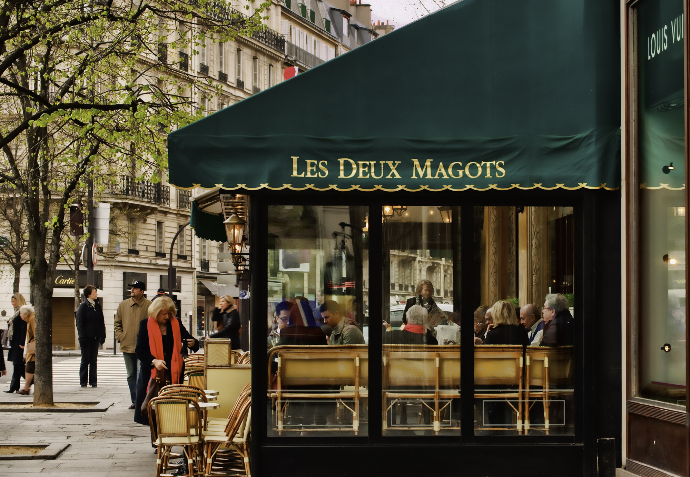
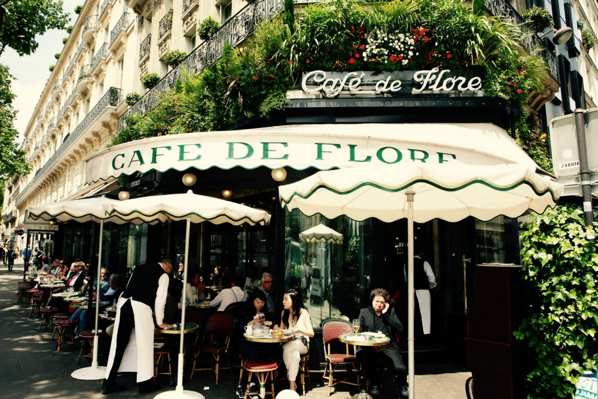
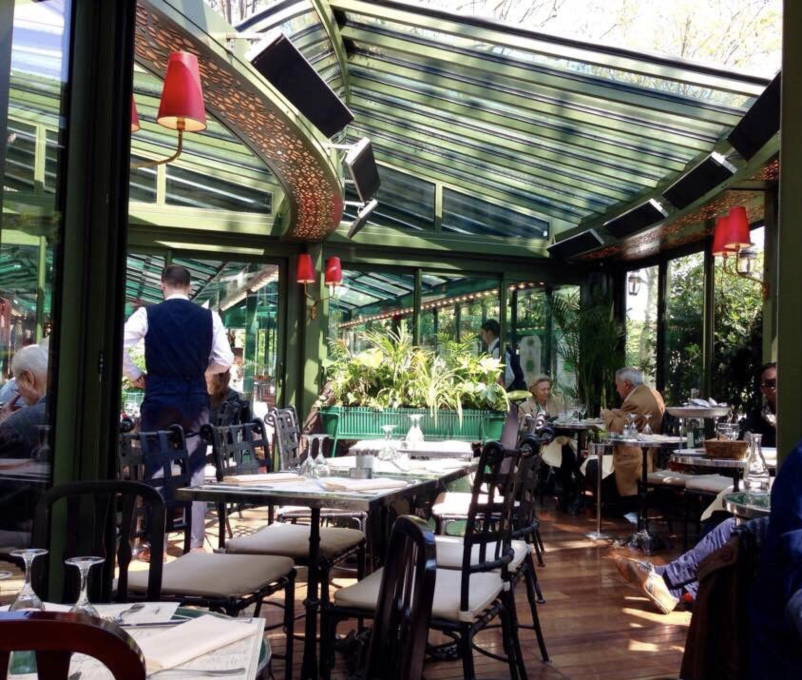
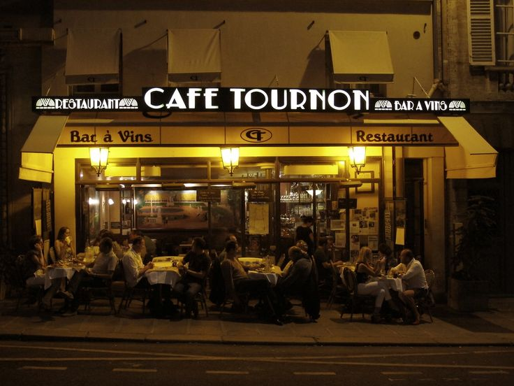

Cafes in Paris
Lex Deux Magots
Les Deux Magots has been frequented by many famous writers and artists, such as Simone de Beauvoir, Jean-Paul Sartre, Ernest Hemingway, Paul Verlaine, Arthur Rimbaud, Pablo Picasso, Bertold Brecht and James Joyce. It has hosted historically many figures and movements of artistic and cultural impact in its daily life.
Named after a theatrical play famous of the time, Les Deux Magots de la Chine ("The Two Chinese Figurines"), the place was originally founded in 1812 as a novelty shop in the Rue de Buci, where the majority of its fabrics sold were imported from China.
In 1873, the shop moved to the place Saint-Germain-des-Prés and in 1884 transformed into a cafe. Nowadays it hosts literary prizes such as the musical Prix Pélleas and the artistic Prix Saint-Germain, but also the Prix de Deux Magots, founded in 1933, as an alternative to the conservative ones, which has been impacting the parisien cultural life ever since.
Transport Information
Walking distance of Metro stations:- Saint-German-des-Prés (2 min)
Cafe de Flore
Right across Les Deux Magots, the Cafe de Flore is located in the 6th arrondissement, in the Boulevard Saint-Germain. It has been functioning since the end of the 19th Century and in this time it has attracted for decades remarkable artists and philosophers such as Pablo Picasso and Jean Paul-Sartre.
Since 1994 Cafe de Flore has been hosting the literary prize Prix de Flore. In Adam Gopnik 2000's book Paris to the Moon, a series of essays on the parisien modern life, there's an essay dedicated to the popularity and history of Cafe de Flore and Les Deux Magots, named "A Tale of Two Cafes", which analyses both cafes' popularity and the famous figures they have attracted along the years.
Transport Information
Walking distance of Metro stations:- Saint-Germain-des-Prés (2 min)
- Saint-Sulpice (4 min)
- Mabillon (4 min)
Las Closeries des Lilas
Localised in the Boulevard du Montparnasse, in the 6th arrondissement, Las Closerie des Lilas is a beautiful and delicate cafe with a themed decoration of nature and flowers. It has a glass ceiling and a spacious outdoor patio, besides a surprisingly highly rated menu for plates and desserts.
Also known for having hosted many of Ernest Hemingway's visits, it's considered a refined and cozy place, although the prices might not be nearly as attractive as the atmosphere. For a glamour visit to a cafe in Paris, it might be an interesting choice with nice music and a marvellous environment to appreciate a small meal around plants and contact with the outside.
Transport Information
Walking distance of Metro stations:- Port-Royal (RER) (1 min)
Cafe Tournon
Close to Les Jardins de Louxembourg, it's considered by its visitors to be very artistic. It's seen by some as an authentic parisien cafe, where the food is good and well-served, being recommended by chefs and locals.
The service is considered very friendly, with a fair price and it's located near many hotels and touristic places in the City of Light. It can be very convenient to go with a group of friends or to relax and appreciate the French cuisine in a late lunch.
Transport Information
Walking distance of Metro stations:- Mabillon (5 min)
- Luxembourg (7 min)
- Saint-Sulpice (8 min)
- Cluny (9 min)